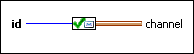

| id specifies the identification information of the message. | |
 |
channel is the channel wire that connects this endpoint to a reader endpoint. |
Requires: Base Development System
Writes an acknowledgement to a Messenger channel that the message with the given id has been read.
You can drop this endpoint on the block diagram by right-clicking a terminal or a wire and selecting Create»Channel Writer»Messenger»Write Ack.

| id specifies the identification information of the message. | |
|
channel is the channel wire that connects this endpoint to a reader endpoint. |